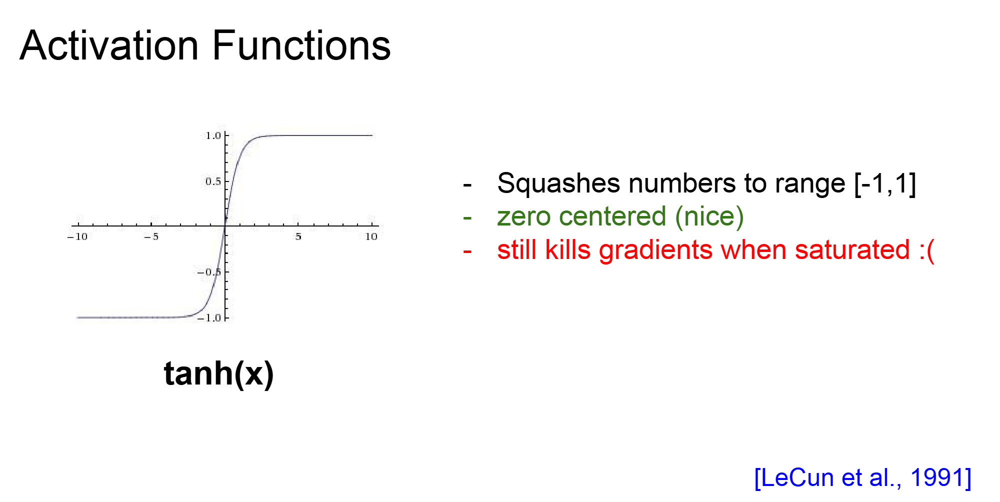

Your Progress
Introduction
What is Deep Learning?
Deep learning is a branch of machine learning that uses multi-layered neural networks to automatically learn rich, hierarchical representations of data. Unlike “shallow” ML models—where features must be hand-crafted—deep nets discover features from raw inputs (images, text, audio) by stacking layers of processing units and training end-to-end with large datasets and modern GPUs.

What is different of Deep Learning from Machine Learning?

- Machine Learning covers Deep Learning.
- Features are given machine learning manually.
- On the other hand, deep learning learns features directly from data.
Video Lecture
Deep Learning Introduction
Perceptron
A perceptron is the simplest kind of neural unit. It takes inputs x₁, x₂,…, xₙ, multiplies each by a corresponding weight w, sums them up along with a bias term b, and then applies an activation function to decide its output:
-
Weighted sum + bias:
z = w₁·x₁ + w₂·x₂ + … + wₙ·xₙ + b -
Activation:
For a classic perceptron it’s a step function:
output = 1 if z ≥ 0; otherwise 0 -
Result:
The neuron “fires” (1) or “doesn’t” (0) based on whether the total input crosses the threshold set byb.
Perceptron demo
Use the perceptron slider to adjust how strongly the inputs connect to the output—thicker green links mean a positive activation and thicker red links mean a negative one—so you can see how a single neuron sums its inputs.
Perceptron Explorer
Because a single perceptron can only draw a straight line, it can only solve problems where the classes are linearly separable.
Activation Functions
Neural networks need non-linear activation functions so that, when you stack many layers, the overall model can learn complex, curved decision boundaries. Below are three of the most common activations:
ReLU (Rectified Linear Unit)
Sigmoid
Tanh
Multilayer Perceptrons
A multilayer perceptron stacks simple neurons into layers—usually an input layer, one or more hidden layers, and an output layer:
- Input → Hidden: each hidden neuron takes a weighted sum of all inputs, applies its activation, and passes the result on.
- Hidden → Output: the next layer treats those activations as its “inputs,” transforming them again.
In plain English, a forward pass is just “each layer transforms and passes on its activations.” For an MLP with one hidden layer:
// inputs x (size d), weights W₁ (d×h), bias b₁ (h)
h = activation( x · W₁ + b₁ )
// hidden h (size h), weights W₂ (h×k), bias b₂ (k)
ŷ = softmax( h · W₂ + b₂ ) // for k-way classification
Choosing a Loss Function
-
Mean Squared Error (MSE):
L = ½‖y – ŷ‖²Good for regression or when outputs are real-valued. Penalizes large errors quadratically. -
Cross-Entropy:
L = –∑ yᵢ log(ŷᵢ)Standard for classification. Measures the “surprise” of predicting probability ŷ when the true label is y.
As you train, the network does a forward pass to compute ŷ, calculates the loss, then uses backpropagation to adjust all W and b to make future predictions more accurate.

Neural Networks Architecture

Video Lecture
Introduction to Neural Networks
Backprop & Gradient Descent
To train a neural network, we need to find the best weights that minimize our error (loss). Two key ideas make this possible:
Gradient Descent: “Follow the Slope Downhill”
- Imagine the loss as a hilly landscape over all possible weight values.
- Gradient descent computes the slope (gradient) of the hill at the current point and then takes a small step downhill.
- Repeating this many times moves us toward a valley (minimum loss) where the network makes the most accurate predictions.
Backpropagation: Passing the Error Backward
- Backpropagation is how we compute those slopes efficiently.
- After doing a forward pass to get the network’s prediction and measure the loss, we “flow” the error back through each layer using the chain rule of calculus.
- At each neuron we calculate how much that weight contributed to the final error, so we know exactly how to adjust it.
Backpropagation Explorer
// Pseudocode for one training step, using your sliders:
x1 = getValue('#bp-x1') // input 1 from the Input 1 slider
x2 = getValue('#bp-x2') // input 2 from the Input 2 slider
y = getValue('#bp-y') // target value from the Target slider
lr = getValue('#bp-lr') // learning rate from the LR input
pred = model.forward([x1, x2]) // forward pass
loss = computeLoss(pred, y) // measure error against target
grads = model.backpropagate(loss) // chain rule to get dLoss/dWeights
model.updateWeights(grads, lr) // step downhill with chosen learning rate
In the Backpropagation Explorer above, set your inputs and target, then click “Train Step.” You’ll see each connection’s weight change (link thickness/color) and watch the overall error shrink—one tiny downhill step at a time.
Gradient Descent

Numerical gradient:
- Slow: O(d) extra evaluations per parameter
- Approximate: susceptible to choice of h and round-off
- Easy to write: one-line finite-difference formula
Analytic (backprop) gradient:
- Fast: same cost as one forward+backward pass
- Exact: no approximation error
- Error-prone: implementation bugs (chain-rule mix-ups)
Training Mechanics
Learning Rate: Too Large vs. Too Small
The learning rate (lr) controls how big a step we take down the loss landscape each update.
If too large, updates overshoot the minimum and training can diverge.
If too small, progress is painstakingly slow and may get stuck in shallow valleys.
A common strategy is to start with a moderate rate (e.g. 0.01), then reduce it over time.

Batch vs. Stochastic vs. Mini-Batch Training
- Batch Gradient Descent: uses the entire training set to compute one update per epoch. Stable but can be very slow and memory-intensive for large datasets.
- Stochastic Gradient Descent (SGD): updates the model for each training example. Fast and can escape shallow local minima, but the loss curve is noisy.
- Mini-Batch Gradient Descent: a compromise—each update uses a small subset (e.g. 32–256 samples). The most popular choice: balances speed, stability, and efficient use of hardware.
Overfitting & Underfitting
Underfitting happens when the model is too simple to capture the data’s patterns—training and validation losses both stay high. Overfitting happens when the model memorizes training data too well—training loss is low but validation loss rises.
To guard against overfitting, set aside a validation set and monitor its loss during training. Use early stopping to halt training once validation loss stops improving. Other regularization techniques (dropout, weight decay) can also help keep your model generalizable.
CNNs
Local Receptive Fields & Shared Weights
Instead of connecting every neuron to the entire input, a convolutional layer uses small windows (e.g. 3×3 pixels) called receptive fields. One filter (kernel) of weights slides across the image—those same weights are shared at each position—so you learn one pattern detector that applies everywhere. The result is a feature map that highlights where that pattern appears.
The Convolution Operation

Step by step:
- Extract the current 3×3 patch from the input image.
- Multiply each patch value by its corresponding filter weight and sum them.
- Optionally add a bias and apply a non-linear activation (e.g. ReLU).
- Advance the filter by the stride (often 1 pixel) and repeat until the image is covered.
Pooling Layers
After convolution, a pooling layer downsamples each feature map to reduce computation and build translation invariance:
- Max-pooling: in each window (e.g. 2×2), keep only the maximum activation.
- Average-pooling: take the mean activation in each window.
Pooling helps the network focus on the strongest signals and makes small shifts in the input less impactful on the final output.
RNNs & LSTMs
Handling Temporal Data
Recurrent Neural Networks (RNNs) process data one time step at a time. Each RNN cell has a hidden state that carries information from previous steps into the next, letting the network “remember” what it saw before (useful for text, audio, time series, etc.).
The Vanishing Gradient Problem
When you backpropagate through many time steps, gradients can shrink exponentially—early steps hardly learn anything. This is the vanishing gradient problem, which makes training long sequences difficult.
LSTM & GRU Gates to the Rescue
Long Short-Term Memory (LSTM) and Gated Recurrent Unit (GRU) cells add “gates” that control information flow. Forget gates decide what to discard, input gates decide what to store, and output gates decide what to pass on, preserving useful gradients over long sequences.

Transformers

Self-Attention: Every Element “Looks At” Every Other
In a Transformer layer, each token computes attention scores against all tokens in the sequence. This self-attention mechanism lets the model weigh and combine contextual information from anywhere in the sequence, not just its immediate neighbors.
Positional Encodings to Retain Order
Because Transformers have no built-in notion of order, we add positional encodings to each token embedding before self-attention. These encodings inject a sense of “position” so the model knows which token comes first, second, etc.
Massive Parallelism & State-of-the-Art
Unlike RNNs, Transformers process all tokens simultaneously, enabling highly parallel training on modern hardware. This scalability—and the power of multi-headed attention—has made Transformers the architecture of choice in NLP (BERT, GPT) and increasingly in vision and cross-modal tasks.
Quiz
Coding Exercises
Complete the following exercise: implement the sigmoid(x) function so that it returns
1 / (1 + Math.exp(-x)). Type your code in the editor below and click “Run Code” for instant feedback.